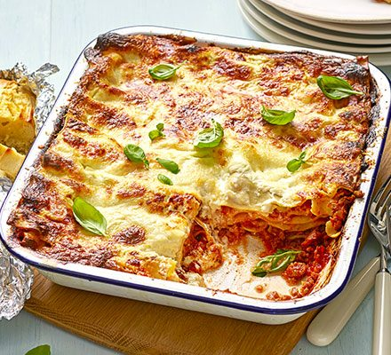

Home
Lasagna

Lasagne (or lasagna) is a classic Italian dish consisting of layers of flat pasta
sheets (lasagne noodles) interspersed with various fillings like ragù (meat sauce),
béchamel (white sauce), cheese, and vegetables, then baked.
- Lasagna noodles (about 12-15 sheets)
- Ground beef or Italian sausage (1-2 lbs)
- Onion 1 medium, diced
- - Crushed tomatoes (28 oz can)
- Tomato paste (6 oz can)
- Tomato sauce
- Italian seasoning
- Sail and Pepper
- Riccota cheese
- Mozzarella cheese
- parmesan cheese